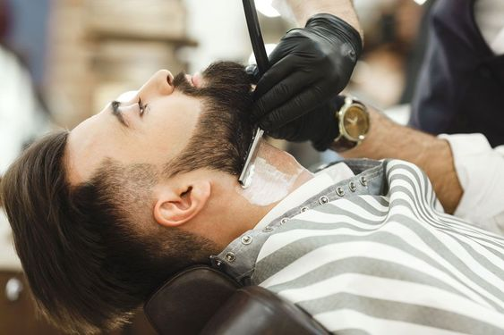
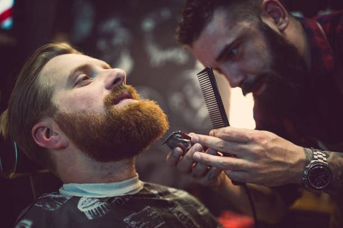
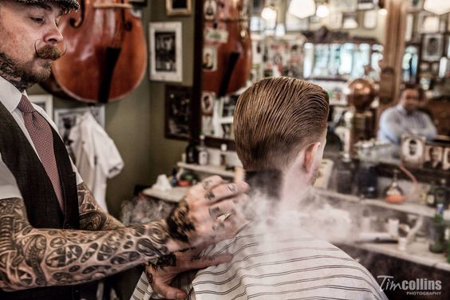
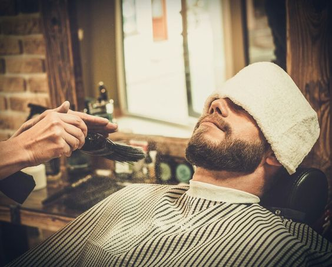
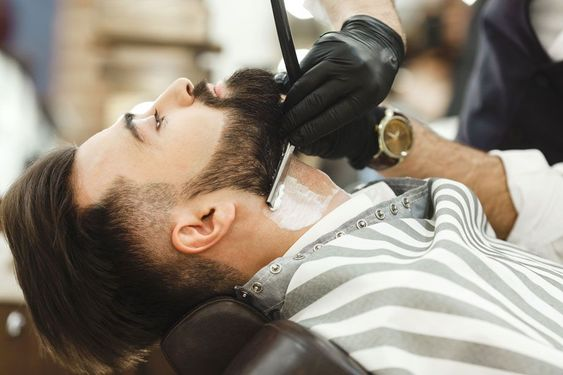
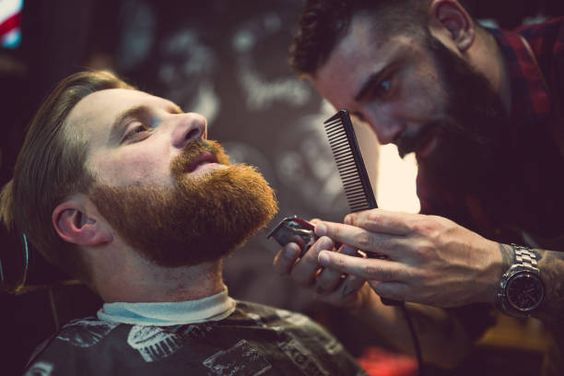
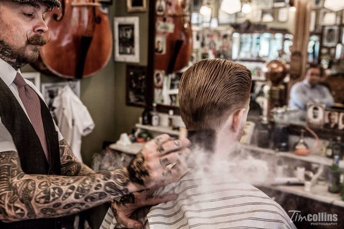
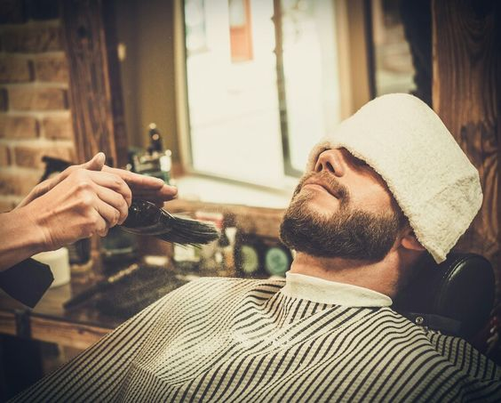

Barberia De Caballeros
Nuestra Historia
En el corazón de la ciudad, hace décadas, un caballero fundó la Barbería Gentleman's Haven. Inspirado por la elegancia perdida de épocas pasadas, este hombre creó un refugio para hombres que valoraban la distinción y el buen trato.
Desde entonces, la barbería se destacó por su ambiente acogedor y atención personalizada. Se convirtió en un punto de encuentro donde las historias fluían libremente. Cuando el fundador pasó el negocio a su joven aprendiz, la tradición de excelencia continuó, adaptándose a los tiempos modernos sin perder su esencia.
Hoy en día, la Barbería Gentleman's Haven sigue siendo un bastión de estilo y elegancia, donde los hombres encuentran una experiencia que los transporta a una era de caballerosidad y buen gusto.

Ser barbero se trata de cuidar a las personas.
- Anthony Hamilton -
Algunos de Nuestros Trabajos
 






